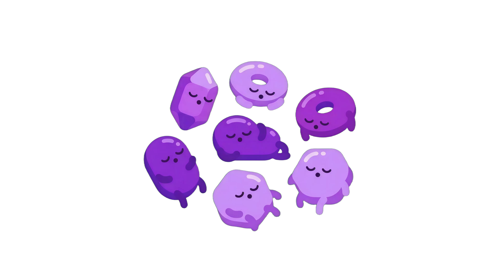

Inmunidad Innata (Inespecífica)
Presente desde el nacimiento · Sin memoria · Reconocimiento por PAMPs
Infografía Interactiva & Atlas Biológico · Desde la Invasión hasta la Eliminación

Dos subsistemas evolutivos que operan de forma coordinada e interdependiente. La inmunidad innata contiene la amenaza en minutos, mientras que la adaptativa genera armas específicas de alta afinidad y memoria duradera.
Presente desde el nacimiento · Sin memoria · Reconocimiento por PAMPs
Requiere presentación antigénica · Genera memoria · Receptores V(D)J
Barreras físicas y bioquímicas. Reconocimiento por macrófagos tisulares y activación de la vía alterna del complemento.
Quimiotaxis y reclutamiento masivo de neutrófilos. Inflamación aguda, secreción de citoquinas e inicio de la maduración dendrítica.
Presentación de antígenos en ganglios linfáticos. Selección y expansión clonal de linfocitos T (CD4+, CD8+) y linfocitos B.
Células plasmáticas producen anticuerpos IgG de alta afinidad. Lisis por CD8+, neutralización total y patrulla de memoria permanente.
Todos los leucocitos provienen de la Célula Madre Hematopoyética en la médula ósea. Selecciona una célula para examinar su ficha.
Más de 30 proteínas plasmáticas circulantes en forma inactiva que se activan en cascada enzimática. Observa cómo convergen las tres vías en la formación del complejo de ataque a la membrana (MAC) y la lisis osmótica del invasor.
1. Opsonización: C3b etiqueta al patógeno.
2. Inflamación: C3a y C5a reclutan fagocitos.
3. Lisis: C5b-9 perfora la membrana celular.

Proteínas circulantes inactivas listas para activarse.
Función fisiológica detallada.